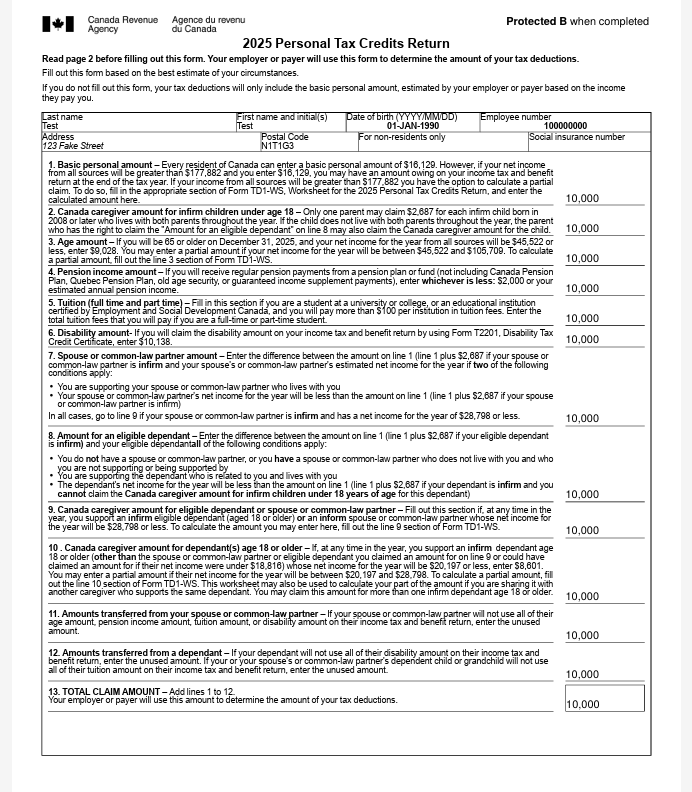

Work Term Report (Winter 2026)
Junior Analyst - DevOps Change Management
A New Experience
For my winter 2026 co-op position, I returned to the University of Guelph for another co-op term, though in an entirely different capacity. My previous position as Web Redesign Coordinator allowed me to develop strong skills in design and front-end work, but I was eager to broaden my technical foundation. This led me to pursue a Junior Analyst role in a different department, where I could shift my focus toward backend processes. Rather than simply building on what I already knew, I saw this as an opportunity to challenge myself in an area I had not yet explored.
The University of Guelph
Computing and Communication Services (CCS) - Enterprise Applications
My position was within Computing and Communication Services (CCS) - Enterprise Applications at the University of Guelph, a department that supports a wide range of IT initiatives across the institution. CCS operates with many moving parts, touching everything from infrastructure to administrative systems, and working within it gave me a behind the scenes look at just how much goes into keeping a university running. Within Enterprise Applications, I worked primarily alongside the HR and Finance Systems team where much of the critical, day-to-day operational software that the university relies on is maintained and developed.
Projects and Responsibilities
Speedata Report Migration
As part of an upgrade from Speedata Publisher version 3.2.1 to 5.2.0, I was tasked with updating the existing report templates to be compatible with the latest version.
I began by conducting a thorough cross-version analysis - reviewing documentation and testing templates to identify breaking changes, deprecated commands and layout
inconsistencies. From this, I developed a migration plan and maintained a tracking spreadsheet throughout the process to ensure nothing was missed.
The work involved
removing deprecated commands, resolving edge cases and layout discrepancies, and fixing pre-existing bugs, leaving the templates visually improved and ready for the eventual full migration. I also documented each change to support future maintenance.

.NET HR Flex Credit Allocation rewrite
The majority of my term was spent working on a rewrite of the .NET Flex Credit Application – a tool used by HR administrators and employees across the university. I was involved early in the process, attending meetings with the HR team to understand their pain points and requirements for the new system. From these meetings, I created summaries and task lists to keep the project organized and ensure nothing was overlooked.
Before diving into development, I spent
time completing tutorials and training on .NET, as it was a technology I had not worked with before. I also researched the differences between the legacy .NET Framework
the original application was build on and the modern .NET Core we were migrating to. Getting familiar with the existing codebase was another early challenge, as it was a large
project with many interconnected pieces.
Once I had a solid foundation, I designed a Figma wireframe for the application’s new interface, tailoring the look to align with the current
University of Guelph website. I presented this to the HR team, incorporated their feedback, and refined the design before moving into development. I then rewrote the ensure frontend
in .NET Blazor Server, using the legacy app as a reference while breaking lengthy MVC pages into reusable components and improving the UI to match the wireframe. On the backend, I connected
the application to a development database using Entity Framework Core, implemented validations carried over from the legacy system, and wrote unit tests to ensure correctness and reliability.

Skill Development
Reading Comprehension
My role as junior analyst requires me to independently learn complex new concepts on a regular basis. Early in my term, I struggled to stay focused and retain information when working through documentation for new software and programming languages. I set a goal to improve my reading comprehension so I could pick up new concepts with greater ease and efficiency. To achieve this, I started actively taking notes, breaking material into smaller sections, and applied concepts as I went rather than reading documentation end-to-end before attempting anything. By the end of my term, I was spending less time revisiting material and more time actively working with new concepts.
Problem Solving
One of the most valuable skills in computer science is problem solving, but I found that my effectiveness was often undermined by impatience when solutions didn’t come quickly. I set a goal to stay calm and maintain clarity when issues arose so I could approach problems in a more controlled way. Reminding myself that roadblocks are a normal part of the process, and that I had always found a resolution eventually helped me stay grounded. I also started keeping notes on what I had already tried, which kept me from revisiting the same dead ends and helped me move forward more efficiently. By the end of the term, I was experiencing less stress during technical issues and spending less time going in circles.
Technological Literacy
When I secured my position, I was excited for all the new technical tools and frameworks I’d be exposed to. I wanted to improve my programming skills and overall development process by strengthening my knowledge and practical use of technologies like .NET and Speedata Publisher. Coming into this term, my instinct when learning something new was to jump straight into trial and error. While I found that some level of experimentation is useful when getting familiar with a new concept, I also learned it has real limitations on its own. During my first couple months working with .NET, I paired hands-on experimentation with researching unfamiliar commands and concepts along the way. Over time, concepts started connecting, and I found myself relying on trial and error less and critical thinking more. I now have a stronger understanding of the language and framework, and researching unfamiliar concepts has become easier as my overall literacy has improved.
Reflection
Reflecting on my second co-op term, I am proud of the progress I've made both professionally and personally. Taking full responsibility for launching multiple department websites allowed me to grow in areas like communication, organization, and creative problem-solving. While the work was more technical, I learned that creativity plays a key role in every stage of a project, not just the design. I gained confidence in expressing my ideas and took on new responsibilities, such as volunteering at the Fall Open House to speak to prospective students. Along the way, I also formed meaningful connections with my colleagues and supervisors, learning from their expertise and gaining valuable insights. This term has given me the skills and confidence to tackle more complex challenges in the future, and I’m excited to continue applying these lessons in my career.